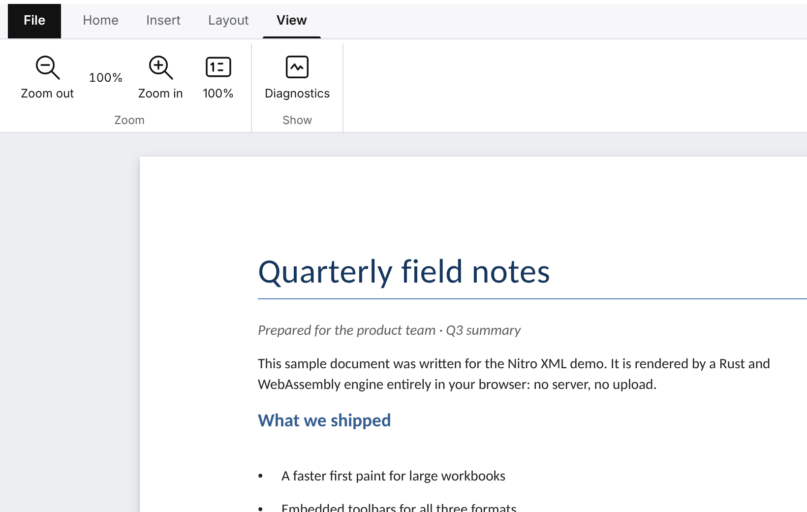
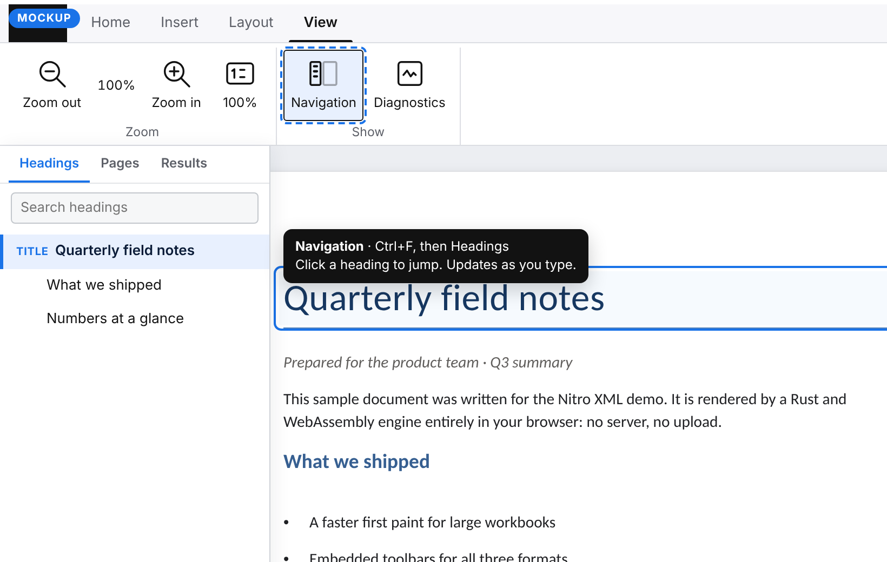
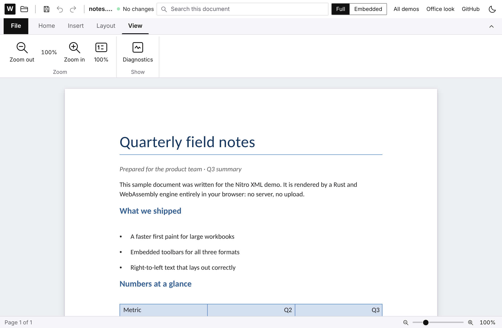
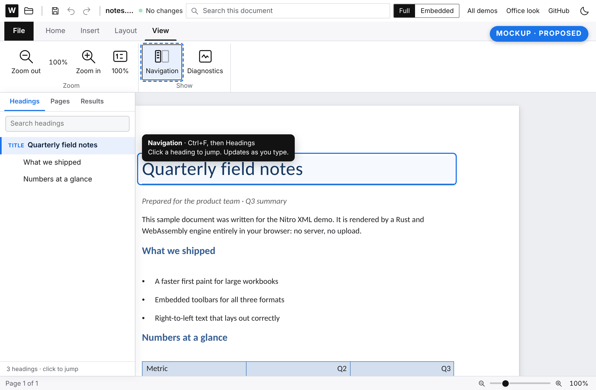

Jump to any heading from a Navigation pane
Approved 2026-11-22 (👍); label applied 2026-11-23. Queued for the nightly build.
Approve: tap 👍 on the issue · Decline: tap 👎
Close-up of the change




Full screen


Today: View has only Zoom and Diagnostics. Headings are in the page, but there is no list of them, so you scroll to find a section. Ctrl+F opens a find box that does not even focus the search field.


Mockup: View > Navigation (or Ctrl+F) opens a left pane with Headings, Pages and Results. The heading on screen is highlighted; click one to jump to it.
Tap an image to open it full size.
Why
Word, Google Docs (the document outline) and OnlyOffice all offer a headings list so you can jump around a long document without scrolling. Nitro already paginates and knows paragraph styles (Title, Heading 1–3), and v0.2.0 added get/setPosition, so a jump is a scroll, not a new layout engine. Ctrl+F today opens a find box that does not focus the search field; this puts Find in a Navigation pane with Headings, Pages and Results, the way Word does.
Definition of done
- View > Navigation (pressed while open) shows a left pane with Headings, Pages and Results; Ctrl+F opens it on Results with the search box focused.
- Headings lists Title and Heading 1–3 in document order, indents by level, and highlights the heading currently on screen; click or Enter scrolls that heading into view and moves the caret.
- The list updates after typing, style changes and undo; an empty document or a document with no headings shows a short empty state.
- Pages lists one row per page and jumps to that page. Results is today's find (replace stays with #542) inside the same pane.
- Playwright tests cover open/close, click-to-jump, keyboard, empty state and focused search; Font and Paragraph stay at two rows; bundle-budget and all required checks green.
Approve: tap 👍 on the issue · Decline: tap 👎